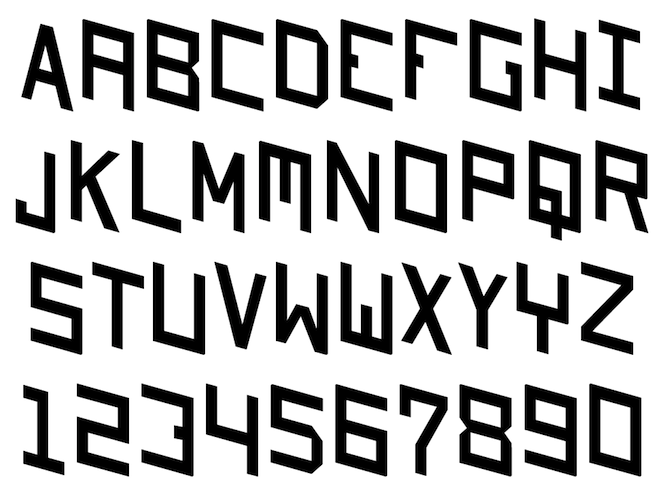
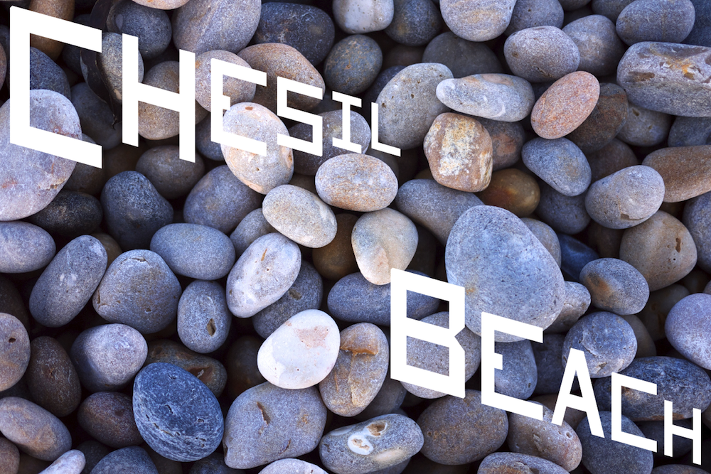
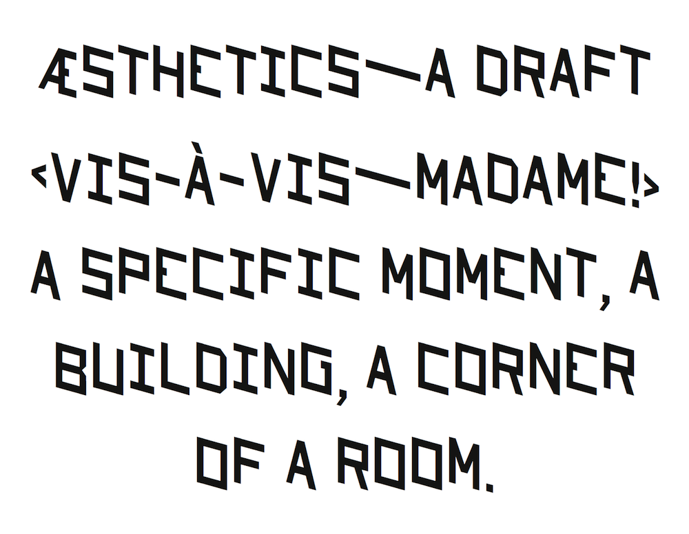
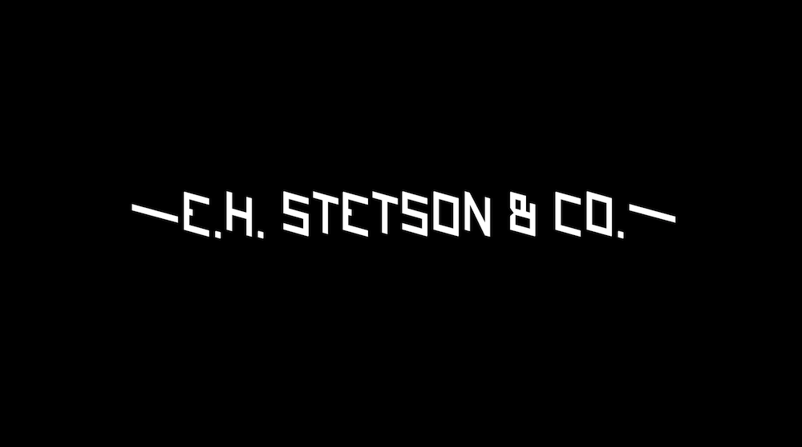

Stetson (2012)


Stetson is an experiment in geo-historical typography. The single-weight face is drawn from a very small sample of 19th century hand-drawn letterforms, found within an old photograph in a shed in Weymouth, Massachusetts. The sample, “E. H. Stetson and Co.,” is surrounded by a display of shoes. Not far from where the photograph was found is the actual Stetson Shoe Co. factory building, which operated in Weymouth from 1885 until 1973.
Stetson Shoe Co. is an indelible part of Weymouth’s history, having employed much of the community throughout most of the 20th century. Shoe manufacturing was an important source of socio-economic strength and pride for the town. The significance of Stetson is firmly embedded in the identity and language of Weymouth, even as its relevance vanishes. Its meaning today is ghost-like and elusive; it haunts photos, stories and family histories.

The Stetson typeface is in a kind of spatio-temporal duet with its own history: it locates itself within the original photograph (late 19th-century New England), as well as in the shed on January 11, 2012. The letterforms vibrate in time and space.

Stetson was created for Weymouths, a 12-volume book project commissioned by the 2012 b-side Arts Festival in Weymouth, England (part of the London2012 Cultural Olympiad by the Sea). Production by Thomas Jockin.
Stetson is available here for free download under an SIL Open Font License / Version 1.1 [FAQ].
Download PDF specimen
Download OpenType font (Stetson.zip)